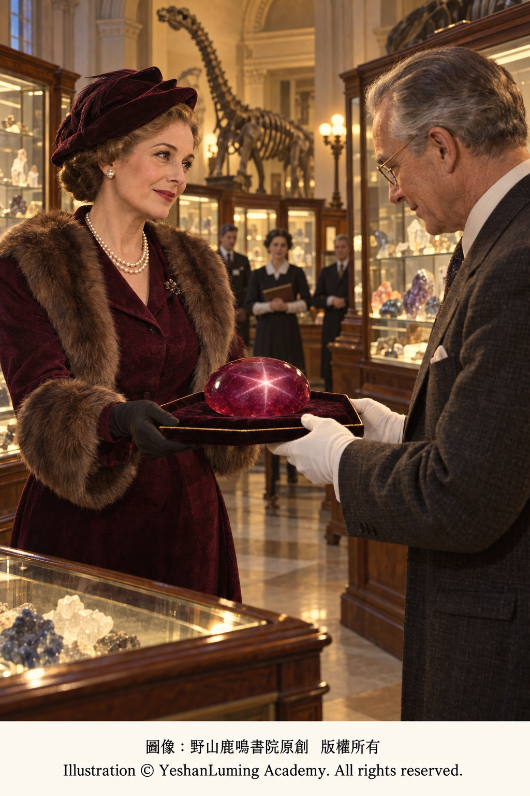
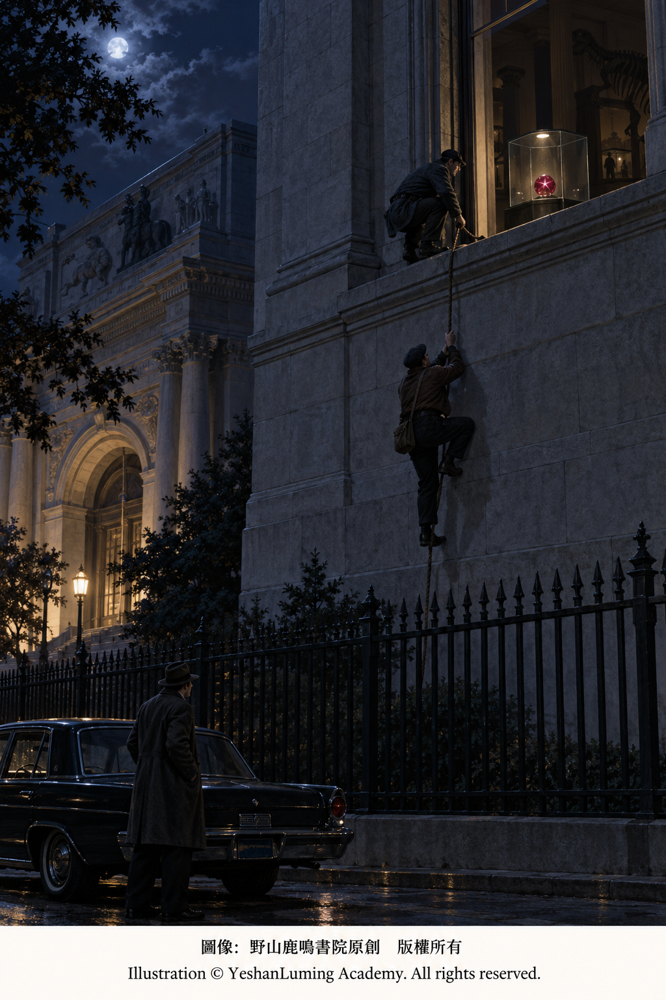
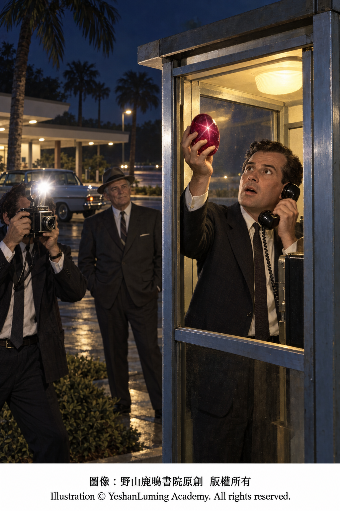

德龍星光紅寶石 · 驚天盜竊案與電話亭中的紅色重逢The DeLong Star Ruby · A Sensational Heist and a Crimson Reunion in a Telephone Booth
The World of Gemstones · Ruby SeriesThe DeLong Star Ruby · A Sensational Heist and a Crimson Reunion in a Telephone Booth
The World of Gemstones · Ruby Series德龍星光紅寶石 · 驚天盜竊案與電話亭中的紅色重逢
寶石世界·紅寶石篇
寶石世界·紅寶石篇（112）The World of Gemstones · Ruby Series (112)
在20世紀60年代的紐約，坐落於曼哈頓中央公園西側的美國自然歷史博物館，不僅是一座享譽世界的科學殿堂，也收藏著許多舉世罕見的寶石與礦物標本。
在博物館的摩根寶石與礦物廳內，一顆重達100.32克拉、呈現濃郁深紫紅色與六射星芒的巨大紅寶石，曾經長年吸引著無數參觀者的目光。
它就是著名的「德龍星光紅寶石」（The DeLong Star Ruby）。
然而，1964年10月29日深夜，這顆百克拉級紅寶石連同「印度之星」等一批珍貴寶石，竟然從博物館的玻璃展櫃中神祕失蹤。這場震驚全美的博物館盜竊案，以及將近一年後發生在佛羅里達州一座公路電話亭裡的離奇尋寶，使德龍星光紅寶石成為世界寶石史上最富傳奇色彩的館藏之一。
從寶石學角度來看，德龍星光紅寶石本身已經極為罕見。
當我們評估一顆星光紅寶石時，除了重量與顏色之外，還要觀察星芒是否清晰、完整，星線交會的位置是否接近寶石中央，以及弧面切工是否能夠充分表現星光效應。
德龍星光紅寶石不僅具有突破100克拉的巨大體量，還呈現出濃郁的深紫紅色。在單一光源照射下，寶石表面可以出現清晰的六射星芒，使這顆本已十分巨大的紅寶石，顯得更加深邃而神祕。
這顆紅寶石產自緬甸，據記載開採於20世紀30年代初期，後來進入美國寶石商與收藏家的視野。1937年，美國社交名流與寶石收藏家伊迪絲·哈金·德龍夫人（Edith Haggin DeLong），以21,400美元從寶石商馬丁·埃爾曼（Martin Ehrmann）手中買下了這顆紅寶石。
德龍夫人沒有把它長期鎖在自己的私人保險庫中，而是在同年將其捐贈給位於紐約的美國自然歷史博物館。這顆寶石也因此以她的姓氏命名，成為「德龍星光紅寶石」。此後二十多年，它一直安靜地陳列在博物館內，成為摩根寶石與礦物廳最引人注目的館藏之一。
沒有人想到，這顆原本應當受到嚴密保護的紅寶石，會在1964年秋天迎來命運中最驚險的一夜。
在20世紀60年代的紐約，坐落於曼哈頓中央公園西側的美國自然歷史博物館，不僅是一座享譽世界的科學殿堂，也收藏著許多舉世罕見的寶石與礦物標本。
在博物館的摩根寶石與礦物廳內，一顆重達100.32克拉、呈現濃郁深紫紅色與六射星芒的巨大紅寶石，曾經長年吸引著無數參觀者的目光。
它就是著名的「德龍星光紅寶石」（The DeLong Star Ruby）。
然而，1964年10月29日深夜，這顆百克拉級紅寶石連同「印度之星」等一批珍貴寶石，竟然從博物館的玻璃展櫃中神祕失蹤。這場震驚全美的博物館盜竊案，以及將近一年後發生在佛羅里達州一座公路電話亭裡的離奇尋寶，使德龍星光紅寶石成為世界寶石史上最富傳奇色彩的館藏之一。
從寶石學角度來看，德龍星光紅寶石本身已經極為罕見。
當我們評估一顆星光紅寶石時，除了重量與顏色之外，還要觀察星芒是否清晰、完整，星線交會的位置是否接近寶石中央，以及弧面切工是否能夠充分表現星光效應。
德龍星光紅寶石不僅具有突破100克拉的巨大體量，還呈現出濃郁的深紫紅色。在單一光源照射下，寶石表面可以出現清晰的六射星芒，使這顆本已十分巨大的紅寶石，顯得更加深邃而神祕。
這顆紅寶石產自緬甸，據記載開採於20世紀30年代初期，後來進入美國寶石商與收藏家的視野。1937年，美國社交名流與寶石收藏家伊迪絲·哈金·德龍夫人（Edith Haggin DeLong），以21,400美元從寶石商馬丁·埃爾曼（Martin Ehrmann）手中買下了這顆紅寶石。
德龍夫人沒有把它長期鎖在自己的私人保險庫中，而是在同年將其捐贈給位於紐約的美國自然歷史博物館。這顆寶石也因此以她的姓氏命名，成為「德龍星光紅寶石」。此後二十多年，它一直安靜地陳列在博物館內，成為摩根寶石與礦物廳最引人注目的館藏之一。

Click to enlarge
沒有人想到，這顆原本應當受到嚴密保護的紅寶石，會在1964年秋天迎來命運中最驚險的一夜。
參與這起盜竊案的三名年輕人，分別是傑克·羅蘭·墨菲（Jack Roland Murphy）、艾倫·庫恩（Allan Kuhn）和羅傑·克拉克（Roger Clark）。
其中，墨菲是一名喜愛衝浪與潛水的年輕人，人稱「衝浪者墨菲」（Murf the Surf）；庫恩也是活躍於邁阿密海灘的冒險人物；克拉克則在行動中主要負責駕車接應和望風。
他們多次進入博物館觀察寶石展廳，逐漸發現這座收藏著無數珍寶的博物館，夜間保安竟然存在令人難以置信的漏洞。寶石展廳外牆的多扇窗戶為了通風，夜間仍然留有縫隙；展櫃雖然裝有警報器，電池卻早已耗盡；原本的夜間守衛措施，也在長期平安無事之後逐漸鬆弛。
1964年10月29日深夜，克拉克駕車把墨菲與庫恩送到博物館後方，自己留在外面負責接應。
庫恩與墨菲翻越帶有尖刺的圍欄，進入博物館內院。庫恩憑藉出色的攀爬能力登上高牆，再放下繩索，幫助墨菲爬上建築物外牆。二人沿著外牆向上攀登，最後從四樓一扇留有縫隙的窗戶進入摩根寶石與礦物廳。

Click to enlarge
在幽暗而寂靜的展廳內，他們利用隨身工具破開多個玻璃展櫃，取走了大約22件珍貴寶石。其中包括重達563.35克拉的「印度之星」藍寶石、100.32克拉的德龍星光紅寶石、116.75克拉的「午夜之星」藍寶石，以及其他鑽石、祖母綠和珍貴彩色寶石。
第二天早晨，博物館工作人員發現展櫃遭到破壞，館藏寶石不翼而飛。這批寶石在當時被估值約41萬美元，但其中多件都是無法取代、難以用金錢衡量的著名歷史標本。
案件立即震動全美。紐約警方與聯邦調查局迅速展開調查。
然而，這三名竊賊雖然敢於攀爬博物館高牆行竊，行事卻並不低調。他們在紐約居住期間衣著醒目、出手闊綽，還經常舉行喧鬧的聚會，早已引起酒店工作人員與警方的注意。案發後不到48小時，警方與聯邦調查局便在紐約和邁阿密採取行動，三名主要涉案者很快落網。
可是，被盜的寶石並沒有隨著竊賊被捕而立即出現。它們早已被轉移，警方一時無法確定這批珍寶究竟落在誰的手中。
1965年1月，在爭取從輕處理的過程中，艾倫·庫恩同意協助追回部分寶石。根據中間人留下的指示，警方在邁阿密一座長途汽車站的寄物櫃中，找到了兩個潮濕的袋子。當袋中的寶石被逐一取出時，失蹤數月的「印度之星」、「午夜之星」、一顆藍寶石、五顆祖母綠和兩顆海藍寶石終於重新出現。
但是，最重要的館藏之一——德龍星光紅寶石，卻不在其中。
這顆重達100.32克拉的紅寶石究竟去了哪裡，一時成為整起案件中最大的謎團。幾個月後，佛羅里達州自由撰稿人弗朗西斯·安特爾（Francis P. Antel）從中間人迪克·皮爾遜（Dick Pearson）那裡得知，有人可能掌握德龍星光紅寶石的下落，但要求以25,000美元作為交換條件。
警方與檢察機關不願以官方身分支付這筆款項，談判一度陷入僵局。
就在紅寶石似乎可能永遠消失之際，美國保險業巨富、企業家和慈善家約翰·D·麥克阿瑟（John D. MacArthur）決定站出來。麥克阿瑟認為，既然博物館曾經將這顆紅寶石公開展出，供全世界的人欣賞，那麼它就不應永遠消失在地下交易之中。他同意提供25,000美元，促成寶石回歸公共收藏。
1965年9月2日，安特爾從麥克阿瑟手中取得贖金，並按照事先安排把款項交給中間人。
當天深夜，麥克阿瑟與《紐約每日新聞》的記者和攝影師在佛羅里達州的一家酒店內等待消息。電話終於響起，眾人按照指示前往陽光州收費公路靠近棕櫚灘的一處服務區。當他們抵達服務區時，一座公共電話亭裡的電話突然響了起來。
《紐約每日新聞》記者比爾·費德里奇（Bill Federici）拿起電話，按照對方的指示，把手伸向電話亭上方的一處突出部位。他的手指碰到了一件被藏起來的物品。失蹤了十個多月的德龍星光紅寶石，終於在這座公路電話亭中重新出現。

Click to enlarge
攝影師記錄下了紅寶石被取回的瞬間。第二天，《紐約每日新聞》以醒目的頭版報道，向全美宣布這顆百克拉級星光紅寶石已經重返光明。德龍星光紅寶石隨後被送回紐約的美國自然歷史博物館。它歷經盜竊、轉移、隱藏與贖回，最終重新回到公眾面前。
從科學角度來看，德龍星光紅寶石的六射星芒，來自寶石內部定向排列的細密針狀金紅石包裹體。當這些金紅石針沿剛玉晶體的不同結晶方向規律排列，而寶石又被切磨成方向正確、弧度適當的弧面形時，入射光便會在寶石表面形成三條交叉的光帶，呈現出六射星芒。
這種現象被稱為星光效應（Asterism）。
星光紅寶石的切磨尤其重要。如果弧面的方向或比例不當，星芒便可能偏離中心、模糊不清，甚至無法完整出現。
德龍星光紅寶石採用橢圓形弧面切工。在單一光源下，它的深紫紅色表面呈現出清晰的六射星芒。巨大的重量、濃郁的顏色與特殊的光學效應，共同構成了它無可取代的博物館價值。
作為天然紅寶石，它屬於剛玉礦物，具有莫氏硬度9、折射率通常約為1.762—1.770、雙折射約為0.008、相對密度約為4.00等基本物理性質。
然而，德龍星光紅寶石的真正傳奇，已經超越了這些可以由儀器測量的寶石學數據。它誕生於緬甸的地層深處，後來進入收藏家與博物館的世界；它曾在紐約深夜被人從展櫃中盜走，也曾在佛羅里達州公路電話亭的微弱燈光下重新出現。
它見證了人類的貪婪與冒險，也見證了收藏家把私人珍寶捐給公眾的慷慨，以及陌生人為保護公共文化財富所作出的努力。
如今，德龍星光紅寶石依然收藏於紐約美國自然歷史博物館。當單一光源照射在它深紫紅色的弧面上，六射星芒再次浮現，彷彿在提醒世人：真正屬於全人類的美麗，或許會一度落入黑暗，卻不應永遠被黑暗吞沒。
德龍星光紅寶石主要資料
名稱： 德龍星光紅寶石
英文名稱： The DeLong Star Ruby
寶石種類： 天然星光紅寶石
重量： 100.32克拉
產地： 緬甸
開採年代： 20世紀30年代初期
顏色： 深紫紅色
切工： 橢圓形弧面切工
特殊光學效應： 六射星芒
購藏者： 伊迪絲·哈金·德龍夫人
購入價格： 21,400美元
捐贈時間： 1937年
收藏地： 美國自然歷史博物館
被盜時間： 1964年10月29日
尋回時間： 1965年9月2日
贖金提供者： 約翰·D·麥克阿瑟
贖金金額： 25,000美元
尋回地點： 佛羅里達州陽光州收費公路靠近棕櫚灘的一處服務區電話亭
（未完待續）
In 1960s New York, the American Museum of Natural History, situated along the western edge of Central Park in Manhattan, was not only a world-renowned temple of science but also the home of many exceptionally rare gems and mineral specimens.
Inside the museum’s Morgan Hall of Gems and Minerals, an enormous 100.32-carat ruby with a richly saturated deep purplish-red color and a six-rayed star had captivated countless visitors for many years.
It was the celebrated DeLong Star Ruby.
Late on the night of October 29, 1964, however, this hundred-carat ruby mysteriously vanished from its glass display case, together with the Star of India and a collection of other precious gems. The museum heist shocked the entire nation, while the extraordinary search that ended nearly a year later at a roadside telephone booth in Florida transformed the DeLong Star Ruby into one of the most legendary treasures in the history of gemstones.
From a gemological perspective, the DeLong Star Ruby is extraordinarily rare in its own right.
When evaluating a star ruby, we must consider more than its weight and color. We must also examine whether its star is sharp and complete, whether the rays intersect near the center of the stone, and whether the cabochon cut fully displays the asterism.
The DeLong Star Ruby not only exceeds 100 carats in weight but also possesses a richly saturated deep purplish-red color. Under a single light source, a distinct six-rayed star appears across its surface, making this already enormous ruby seem even deeper and more mysterious.
The ruby originated in Myanmar and was reportedly mined in the early 1930s before entering the world of American gem dealers and collectors. In 1937, American socialite and gemstone collector Edith Haggin DeLong purchased it from gem dealer Martin Ehrmann for $21,400.
Rather than keeping the ruby locked away in her private vault, Mrs. DeLong donated it that same year to the American Museum of Natural History in New York. The gemstone was subsequently named the “DeLong Star Ruby” in her honor. For more than two decades afterward, it rested peacefully in the museum, becoming one of the most striking treasures in the Morgan Hall of Gems and Minerals.
No one imagined that this ruby, which should have been under the strictest protection, would face the most perilous night of its existence in the autumn of 1964.
In 1960s New York, the American Museum of Natural History, situated along the western edge of Central Park in Manhattan, was not only a world-renowned temple of science but also the home of many exceptionally rare gems and mineral specimens.
Inside the museum’s Morgan Hall of Gems and Minerals, an enormous 100.32-carat ruby with a richly saturated deep purplish-red color and a six-rayed star had captivated countless visitors for many years.
It was the celebrated DeLong Star Ruby.
Late on the night of October 29, 1964, however, this hundred-carat ruby mysteriously vanished from its glass display case, together with the Star of India and a collection of other precious gems. The museum heist shocked the entire nation, while the extraordinary search that ended nearly a year later at a roadside telephone booth in Florida transformed the DeLong Star Ruby into one of the most legendary treasures in the history of gemstones.
From a gemological perspective, the DeLong Star Ruby is extraordinarily rare in its own right.
When evaluating a star ruby, we must consider more than its weight and color. We must also examine whether its star is sharp and complete, whether the rays intersect near the center of the stone, and whether the cabochon cut fully displays the asterism.
The DeLong Star Ruby not only exceeds 100 carats in weight but also possesses a richly saturated deep purplish-red color. Under a single light source, a distinct six-rayed star appears across its surface, making this already enormous ruby seem even deeper and more mysterious.
The ruby originated in Myanmar and was reportedly mined in the early 1930s before entering the world of American gem dealers and collectors. In 1937, American socialite and gemstone collector Edith Haggin DeLong purchased it from gem dealer Martin Ehrmann for $21,400.
Rather than keeping the ruby locked away in her private vault, Mrs. DeLong donated it that same year to the American Museum of Natural History in New York. The gemstone was subsequently named the “DeLong Star Ruby” in her honor. For more than two decades afterward, it rested peacefully in the museum, becoming one of the most striking treasures in the Morgan Hall of Gems and Minerals.
Click to enlarge
No one imagined that this ruby, which should have been under the strictest protection, would face the most perilous night of its existence in the autumn of 1964.
The three young men involved in the theft were Jack Roland Murphy, Allan Kuhn, and Roger Clark.
Murphy, a young man who loved surfing and diving, was known as “Murf the Surf.” Kuhn was another adventurous figure active around Miami Beach, while Clark primarily served as the driver and lookout during the operation.
They entered the museum several times to study the gem hall and gradually discovered that the nighttime security surrounding its priceless treasures contained almost unbelievable weaknesses. Several windows along the exterior wall of the gem hall were left slightly open at night for ventilation; although the display cases were equipped with alarms, their batteries had long since died; and the museum’s nighttime security precautions had gradually relaxed after years without incident.
Late on October 29, 1964, Clark drove Murphy and Kuhn to the rear of the museum and remained outside to assist their escape.
Kuhn and Murphy climbed over a spiked fence and entered the museum courtyard. Using his considerable climbing ability, Kuhn scaled the high wall and then lowered a rope to help Murphy ascend the building. The two continued upward along the exterior wall and finally entered the Morgan Hall of Gems and Minerals through a partially open fourth-floor window.
Click to enlarge
Inside the dark and silent gallery, they used the tools they had brought with them to break open several glass display cases and remove approximately 22 precious gems. Among them were the 563.35-carat Star of India sapphire, the 100.32-carat DeLong Star Ruby, the 116.75-carat Midnight Star sapphire, as well as diamonds, emeralds, and other valuable colored gemstones.
The following morning, museum employees discovered the damaged cases and the empty spaces where the gems had been displayed. The stolen collection was valued at approximately $410,000 at the time, but many of the pieces were irreplaceable historical treasures whose true worth could not be measured in money.
The case immediately shocked the nation. The New York police and the Federal Bureau of Investigation rapidly launched an investigation.
Although the three thieves had dared to scale the museum walls to commit the robbery, they had made little effort to remain inconspicuous. During their stay in New York, they dressed flamboyantly, spent lavishly, and frequently held noisy parties, attracting the attention of hotel employees and the police well before the crime. Less than 48 hours after the theft, police and FBI agents took action in New York and Miami, and the three principal suspects were soon in custody.
Yet the stolen gems did not reappear when the thieves were arrested. They had already been transferred elsewhere, and for a time the authorities could not determine into whose hands the treasures had fallen.
In January 1965, while seeking a more lenient sentence, Allan Kuhn agreed to assist in recovering some of the gems. Following instructions left by an intermediary, investigators found two damp bags inside a locker at a long-distance bus terminal in Miami. When the contents were removed one by one, the Star of India, the Midnight Star, another sapphire, five emeralds, and two aquamarines—missing for several months—finally reappeared.
But one of the museum’s most important treasures, the DeLong Star Ruby, was not among them.
The whereabouts of the 100.32-carat ruby became the greatest remaining mystery in the case. Several months later, Florida freelance writer Francis P. Antel learned from an intermediary named Dick Pearson that someone might know where the DeLong Star Ruby was hidden but wanted $25,000 in exchange for its return.
The police and prosecutors were unwilling to make such a payment in an official capacity, and the negotiations reached an impasse.
Just as the ruby appeared destined to vanish forever, American insurance magnate, entrepreneur, and philanthropist John D. MacArthur decided to step forward. MacArthur believed that because the museum had displayed the ruby for people throughout the world to admire, it should not be allowed to disappear permanently into the underground market. He agreed to provide $25,000 to help restore the gem to the public collection.
On September 2, 1965, Antel received the ransom money from MacArthur and delivered it to the intermediary according to their arrangement.
Late that night, MacArthur waited in a Florida hotel with a reporter and photographer from the New York Daily News. At last, the telephone rang, and the group followed the instructions they received to a service plaza on the Sunshine State Parkway near Palm Beach. When they arrived, the telephone inside a public booth suddenly began to ring.
New York Daily News reporter Bill Federici answered the call and, following the caller’s directions, reached toward a ledge above the telephone booth. His fingers touched a concealed object. After more than ten months in hiding, the DeLong Star Ruby had finally reappeared inside that roadside telephone booth.
Click to enlarge
The photographer recorded the moment the ruby was recovered. The following day, the New York Daily News announced in a striking front-page report that the hundred-carat star ruby had returned to the light. The DeLong Star Ruby was subsequently returned to the American Museum of Natural History in New York. After theft, transfer, concealment, and ransom, it finally came back before the public.
From a scientific perspective, the six-rayed star of the DeLong Star Ruby is produced by fine, needle-like rutile inclusions aligned in regular directions within the stone. When these rutile needles follow different crystallographic directions in the corundum crystal—and when the gemstone is fashioned as a properly oriented cabochon with the appropriate curvature—incident light forms three intersecting bands across its surface, producing a six-rayed star.
This phenomenon is known as asterism.
The cutting of a star ruby is especially important. If the cabochon is incorrectly oriented or proportioned, the star may shift away from the center, appear indistinct, or fail to emerge completely.
The DeLong Star Ruby has an oval cabochon cut. Under a single light source, a distinct six-rayed star appears across its deep purplish-red surface. Its immense weight, richly saturated color, and remarkable optical phenomenon together give it an irreplaceable place among the museum’s treasures.
As a natural ruby, it belongs to the corundum mineral species, which has a Mohs hardness of 9, a typical refractive index of approximately 1.762–1.770, birefringence of about 0.008, and a specific gravity of approximately 4.00.
Yet the true legend of the DeLong Star Ruby has transcended these gemological properties that scientific instruments can measure. It was born deep within the earth in Myanmar before entering the worlds of collectors and museums; it was stolen from a display case in the darkness of a New York night and later reappeared beneath the faint light of a roadside telephone booth in Florida.
It witnessed human greed and reckless adventure, but it also witnessed the generosity of a collector who gave a private treasure to the public, as well as the efforts of strangers determined to protect a shared cultural treasure.
Today, the DeLong Star Ruby remains in the collection of the American Museum of Natural History in New York. When a single light source shines upon its deep purplish-red cabochon surface and the six-rayed star appears once more, it seems to remind the world that beauty belonging to all humanity may briefly fall into darkness—but it should never be swallowed by darkness forever.
Essential Information About the DeLong Star Ruby
Name: DeLong Star Ruby
English Name: The DeLong Star Ruby
Gemstone Variety: Natural star ruby
Weight: 100.32 carats
Origin: Myanmar
Period Mined: Early 1930s
Color: Deep purplish red
Cut: Oval cabochon
Special Optical Phenomenon: Six-rayed asterism
Purchaser: Mrs. Edith Haggin DeLong
Purchase Price: $21,400
Year Donated: 1937
Current Collection: American Museum of Natural History
Date Stolen: October 29, 1964
Date Recovered: September 2, 1965
Ransom Provider: John D. MacArthur
Ransom Amount: $25,000
Recovery Location: A telephone booth at a service plaza on the Sunshine State Parkway near Palm Beach, Florida
(To be continued)